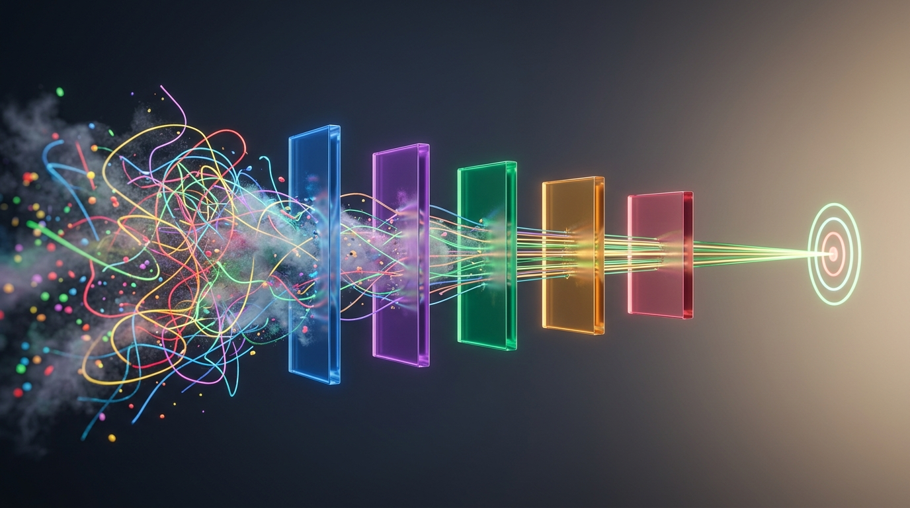

El Embudo del SDLC: De la Alucinación a la Certeza
No dejes que el modelo elija entre millones de caminos. Cada fase es un filtro que reduce la entropía hasta lograr una solución verificada.

El Ciclo de Desarrollo con IA: Estructura, Disciplina y Contexto
La IA no sustituye el diseño ni el criterio artesanal: los potencia a través de un pipeline estructurado con habilidades especializadas (Skills).
/inception
/create-flow-doc
/create-entity
/implement-flow
/modify & /audit
Paso 1: Matriz de Fronteras ¿Qué NO somos y qué NO hacemos?
Acotar el espacio de búsqueda del modelo antes de tirar una sola línea de código o discutir features.
HACE / NO HACE: Alcance de capacidades estrictas para el MVP.
/inception-workshop
• Paso 1: Product Vision & Boundaries
| Para | Equipos de ingeniería y crafters de software |
| Que | Necesitan desarrollo asistido por IA con cero fuga de datos |
| El Producto | Local Crafter |
| Es un | Orquestador de SDLC determinista con modelos locales |
| A diferencia de | Copilots en la nube que generan código spaghetti |
| Nuestro Prod. | 100% offline, guiado por TDD estricto y FSM |
| ✅ El Producto ES | ❌ El Producto NO ES |
|---|---|
| Motor de inferencia local autónomo | Un generador ciego de código spaghetti |
| Copiloto guiado por TDD estricto | Un servicio SaaS con backend en la nube |
| Arquitectura limpia y hexagonal | Un chat libre sin contratos formales |
| ⚡ El Producto HACE | 🚫 El Producto NO HACE |
| Ejecutar modelos en GPU/Apple Silicon | Enviar telemetría o prompts a internet |
| Validar entidades con FSM y Guards | Modificar ficheros sin propuesta previa |
| Sincronizar specs vivas con el código | Instalar dependencias npm/pip arbitrarias |
Paso 2: Tablero de Tradeoffs ¿Qué sacrificamos para ser deterministas?
La regla de los Sliders: una sola prioridad por columna para forzar consenso y arbitrar los dilemas técnicos del modelo.
/inception-workshop
• Paso 2: Trade-off Board (Sliders)
| Rol | Prioridad #1 | Motivación Clave |
|---|---|---|
| Tech Lead | Privacidad 100% Offline | Cero fuga de propiedad intelectual o datos corporativos |
| PO | Latencia < 1s en local | El crafter abandona si el loop de inferencia es lento |
| Crafter | Determinismo & TDD | Eliminar alucinaciones con tests unitarios estrictos |
| Dimensión / Calidad | 1 (Máx) | 2 | 3 | 4 | 5 | 6 (Mín) |
|---|---|---|---|---|---|---|
| Privacidad (Offline) | ❌ | · | · | · | · | · |
| Latencia Inferencia | · | ❌ | · | · | · | · |
| TDD / Calidad Código | · | · | ❌ | · | · | · |
| Arquitectura Limpia | · | · | · | ❌ | · | · |
| Consumo Hardware | · | · | · | · | ❌ | · |
| Volumen Features | · | · | · | · | · | ❌ (Bajo) |
Paso 3: User Personas ¿Para qué artesano concreto diseñamos?
Poner nombre, hardware, stack y dolores reales al usuario para evitar que el modelo genere soluciones abstractas de tutorial.
/inception-workshop
• Paso 3: Primary & Secondary Personas
| Nombre / Rol | Elena Torres (36a) • Tech Lead & Crafter |
| Entorno | Laptop corporativo aislado (Sin salida cloud externa) |
| Stack Core | Rust, TypeScript, Arquitectura Hexagonal, TDD |
| Nivel Técnico | Avanzado (Power user: exige CLI, atajos y determinismo) |
| 🎯 Meta Primaria | Inferencia local ultrarrápida guiada por tests automáticos |
| 🎯 Meta Crafter | Garantizar cero deuda técnica generada por la IA |
| ❌ Pain Crítico | Copilots en nube que filtran datos confidenciales a internet |
| ❌ Frustración | Tener que limpiar 300 líneas de código autogenerado sin tests |
Paso 4: Mapa de Empatía ¿Qué dolor y ansiedad aliviamos?
Explorar qué piensa, siente, oye y hace el artesano para que el copiloto resuelva fricciones reales en lugar de inventar complejidad.
/inception-workshop
• Paso 4: Empathy Map (Pains & Gains)
| 👀 QUÉ VE (Entorno) | 🗣️ QUÉ DICE (En voz alta) |
|---|---|
| Equipos copiando prompts a ciegas; facturas SaaS disparadas y pérdida de control técnico. | "Necesito que la IA me ayude a pensar y testear, no que genere código spaghetti." |
| 🧠 QUÉ PIENSA Y SIENTE | ✍️ QUÉ HACE (Comportamiento) |
| Miedo: Deuda técnica invisible. Esperanza: Flujo continuo con TDD. |
Escribe tests primero, mide la latencia offline y audita cada commit antes de mezclar. |
| 😖 PAINS | Alucinaciones en contratos DDD • Miedo a fuga de IP • Depuración a ciegas |
| ✨ GAINS | Inferencia local ultrarrápida (<1s) • Suite en verde en 12s • Control total |
Paso 5: Features Brainstorming ¿Qué ideas concretas resuelven el dolor?
Filtrado implacable: ninguna funcionalidad entra sin vincularse explícitamente a una Persona y a un Pain del Paso 4.
Pain: Alucinaciones en DDD ➔ Feature: FSM & Guards./inception-workshop
• Paso 5: Features Brainstorming
| Feature | Dolor de Elena que Resuelve | Valor / Esfuerzo | Prioridad |
|---|---|---|---|
| Inferencia Local Ollama | Fuga de IP corporativa en cloud | Alto / Bajo | Must-have 🟢 |
| Validación FSM & Guards | Alucinaciones de código spaghetti | Alto / Medio | Must-have 🟢 |
| Mermaid Sync Bidireccional | Deuda técnica y drift de arquitectura | Medio / Medio | Should-have 🟡 |
| Panel Web SaaS Cloud | Ninguno (Viola Paso 1 Fronteras) | Bajo / Alto | Rechazada ❌ |
Paso 6: User Journey Mapping ¿Cuál es el recorrido cronológico E2E?
Mapear la experiencia de extremo a extremo: del primer comando en el IDE a la suite en verde sin salir de local.
/create-flow-doc (Arquitectura Hexagonal)./inception-workshop
• Paso 6: User Journey Mapping
| Etapa | Trigger del Crafter | Respuesta del Sistema / IA |
|---|---|---|
| 1. Incepción | /inception-workshop |
Genera 8 specs vivas en docs/inception/ |
| 2. Arquitectura | /create-flow-doc |
Modela puertos, entidades y diagramas Mermaid |
| 3. Ciclo TDD | /implement-flow |
Genera test unitario rojo (Rust/TS) |
| 4. Inferencia | Inferir con Qwen en local | Implementa código mínimo: suite verde en <12s |
| 5. Auditoría | /audit-docs |
Verifica sincronía cero-drift entre spec y código |
Paso 7: Secuenciador de Olas ¿Qué entra en el MVP y qué se bloquea?
Release Planning implacable: dividir el alcance en Olas para construir un 'cupcake' completo antes de soñar con la tarta entera.
/inception-workshop
• Paso 7: Features & Sequencing
| Feature de la Ola 1 | Esfuerzo | Valor Negocio | Valor UX | Confort |
|---|---|---|---|---|
| Motor Inferencia Local | EE | $$$ | ♥♥♥ | TT |
| TDD Capa por Capa | E | $$$ | ♥♥♥ | TTT |
| Fronteras FSM & Guards | E | $$ | ♥♥ | TTT |
| Ola 2 (Próxima) | Auditoría de drift en CI • Soporte multi-modelo MoE dinámico |
| Parking Lot | [ ❌ ] Autenticación OAuth SaaS • Telemetría cloud (Descartadas) |
Paso 8: Contrato MVP Canvas El System Prompt Supremo
Condensar las decisiones de los 7 pasos anteriores en una sola página vinculante con scoring de validación ≥ 8/10 antes de codificar.
/inception-workshop
• Paso 8: MVP Canvas Definition
| Métrica / KPI | Target | Método de Validación |
|---|---|---|
| Latencia Inferencia | < 1.0s | Benchmark local Ollama en GPU/M3 |
| Velocidad Suite TDD | < 15s | Runner de tests automáticos en local |
| Privacidad / Fuga IP | 0 bytes | Auditoría estricta de tráfico de red |
Lean Inception: Humano vs IA (Pasos 1 y 2)
De arriba a abajo: alineación artesanal para el equipo y blindaje determinista contra alucinaciones.
1-boundaries.md2-tradeoffs.mdLean Inception: Humano vs IA (Pasos 3 y 4)
De la empatía sensorial al código ultra-defensivo.
3-personas/elena.md4-empathy.mdLean Inception: Humano vs IA (Pasos 5 y 6)
De la divergencia quirúrgica a los flujos e2e atómicos.
5-brainstorming.md6-user-journeys/Lean Inception: Humano vs IA (Pasos 7 y 8)
Del alcance en Olas al contrato formal vinculante con score ≥ 8/10.
7-sequencing.md8-mvp-canvas.mdImplementación y Evolución: TDD Híbrido y Living Docs sin Drift
Escribir código capa por capa guiado por tests que fallan y sincronizar la documentación en el mismo commit.
El código de producción no se genera de golpe: se construye en capas estrictas donde cada capa valida a la anterior.
Goal Postdomain/application/infrastructure/api/Protocolo estricto para modificar comportamiento existente:
proposal.md: Rationale (As a / I want / So that) + Contraste código actual vs deseado.
El mayor problema de la documentación tradicional es que envejece. La IA audita el código real periódicamente y clasifica:
Caso DeepSeek: Cronología de una Revolución
De un modelo open-weights de 6M$ al "Momento Sputnik", el hackeo en ensamblador PTX y la adopción oficial de NVIDIA.
El "Hackeo" a NVIDIA: De parches PTX a integración nativa
Cómo DeepSeek reescribió los kernels en ensamblador PTX y obligó a NVIDIA a rediseñar TensorRT-LLM para evitar parches extraoficiales.
DeepSeek libera librerías en código ensamblador PTX a bajo nivel que exprimen Hopper hasta los 1.550+ TFLOPS en FP8 y 3.000 GB/s de ancho de banda, demostrando un 50% de rendimiento oculto.
El CEO de NVIDIA reconoce públicamente el avance técnico de DeepSeek y asegura que el ecosistema abierto acelera la demanda y adopción de inferencia sobre silicio NVIDIA.
Para evitar parches de ensamblador no oficiales en producción, NVIDIA absorbe
los kernels de DeepSeek activables de forma nativa con una sola línea:
moe_config.backend = "DEEPGEMM".
Las técnicas de speculative decoding con filtro de confianza de DeepSeek se convierten en estándar de la industria, optimizando inferencia en servidores y en local sin renovar hardware.
2026: Timeline de Modelos & Aceleración
Línea temporal de la revolución open-weights: lanzamientos de arquitecturas y evolución del speculative decoding (MTP ➔ DFlash ➔ DFlash 2).
eugr. Cabezales en el trunk predicen
t+1..t+3 con 0 GB extra de VRAM.
z-lab/DFlash). Genera 8–15 tokens en 1 solo forward
pass paralelo no-autoregresivo.
¿Cómo funciona MTP? Predecir el futuro en un solo paso
En lugar de adivinar palabra por palabra, el modelo usa cabezales internos para anticipar varias palabras a la vez sin modelos externos.
¿Cómo funciona DFlash? El Asistente Rápido + El Experto
Estrategia en tándem: un modelo pequeño escribe un borrador entero en un instante y el modelo grande lo valida en una sola pasada.
Estrategia DSpark: Borradores con Filtro de Confianza
La innovación de DeepSeek: combina generación rápida de bloques con un filtro de probabilidad para no saturar al modelo principal.
Invocación directa sin salir a internet
# Invocación local sin salir de la máquina vía endpoint Ollama
import httpx
async def generate_code_solution(spec: str) -> str:
async with httpx.AsyncClient() as client:
response = await client.post(
"http://localhost:11434/api/generate",
json={
"model": "qwen2.5-coder:7b",
"prompt": f"Craft a clean architecture solution for: {spec}",
"stream": False
}
)
return response.json()["response"]Preguntas & Debate
¿Cómo estás gestionando el coste y la privacidad de la IA en tu equipo? ¿Qué modelos y configuraciones en local o GPU on-demand has probado?
• Diapositivas HTML + CSS + JS exportables a PDF
• Comunidad: AI Local Crafters
• Repositorio abierto con scripts y ejemplos de inferencia